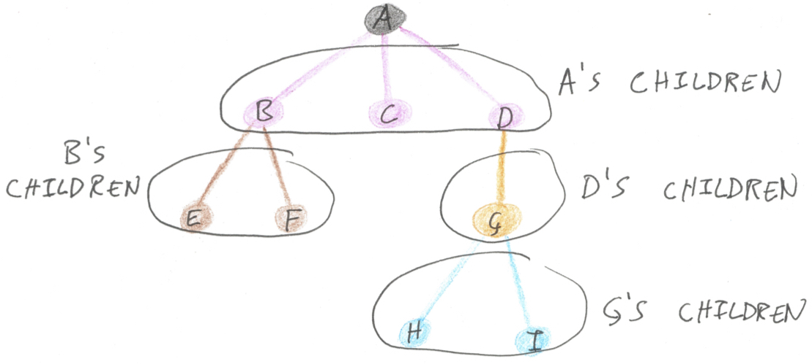

Recursion Without Recursion
Tearing Down Trees in One Line of Code
If you visit Stack Overflow Jobs you’ll see that our job search form supports a simple advanced search syntax, including Boolean operators and a number of custom filters such as technology tags and minimum salary. For example, I hate writing JavaScript, but my loyalties can be bought, so I might type [c#] and (not [javascript] or salary:50000gbp) into the search box. This advanced search syntax is called JQL, for Jobs Query Language.
It should come as no surprise that our codebase contains a miniature compiler for our miniature query language. Our compiler looks much like any other compiler: there’s a parser which produces an abstract syntax tree (hereafter AST), a pipeline of analysers and transformations which operate on that AST, and a code generator which turns the JQL into an ElasticSearch query. (Actually, queries that are simple enough end up skipping the Elastic code generation step, instead being used by an interpreter to search an in-memory cache of jobs.)

In this post I’m going to focus on the middle part of that pipeline: how to write operations traversing a tree with a minimum of boilerplate.
ASTs and operations
The JQL AST looks roughly like this:
abstract class JqlNode {}
class AndNode : JqlNode
{
public JqlNode Left { get; }
public JqlNode Right { get; }
}
class OrNode : JqlNode
{
public JqlNode Left { get; }
public JqlNode Right { get; }
}
class NotNode : JqlNode
{
public JqlNode Operand { get; }
}
class SalaryNode : JqlNode
{
public int Amount { get; }
public string Currency { get; }
}
class TagNode : JqlNode
{
public string Tag { get; }
}Each syntactic form in the source language is represented as a subclass of JqlNode. Using the example I gave above, the input string [c#] and (not [javascript] or salary:50000gbp) would be represented as:
new AndNode(
new TagNode("c#"),
new OrNode(
new NotNode(new TagNode("javascript")),
new SalaryNode(50000, "gbp")
)
)When you need to analyse a JqlNode, you use pattern matching to see what type of node you have, and recursively query the operands of And/Or/Not nodes. Here’s a function which searches for the TagNodes in a tree:
IEnumerable<string> ExtractTags(JqlNode node)
{
switch (node)
{
case TagNode t:
return new[] { t.Tag };
case AndNode a:
// recursively extract the tags from the two operands
return ExtractTags(a.Left).Concat(ExtractTags(a.Right));
case OrNode o:
return ExtractTags(o.Left).Concat(ExtractTags(o.Right));
case NotNode n:
return ExtractTags(n.Operand);
case SalaryNode s:
return Enumerable.Empty<string>();
default:
throw new ArgumentOutOfRangeException(nameof(node));
}
}Transforming a JqlNode to produce a new JqlNode is a similar story: you recursively traverse the tree, taking it apart and putting it back together. Here’s an example of an optimisation step which never doesn’t remove double-negatives, so a query like not (not [java]) gets simplified to [java]:
JqlNode SimplifyDoubleNegatives(JqlNode node)
{
switch (node)
{
case NotNode n1 when n1.Operand is NotNode n2:
return SimplifyDoubleNegatives(n2.Operand);
case TagNode t:
return t;
case SalaryNode s:
return s;
case AndNode a:
// recursively process the operands and rebuild the node
return new AndNode(
SimplifyDoubleNegatives(a.Left),
SimplifyDoubleNegatives(a.Right)
);
case OrNode o:
return new OrNode(
SimplifyDoubleNegatives(o.Left),
SimplifyDoubleNegatives(o.Right)
);
case NotNode n:
return new NotNode(
SimplifyDoubleNegatives(n.Operand)
);
default:
throw new ArgumentOutOfRangeException(nameof(node));
}
}This type of code gets pretty tedious pretty quickly! In both of these functions, only one of the cases was interesting (case TagNode t in ExtractTags and case NotNode n1 when n1.Operand is NotNode n2 in SimplifyDoubleNegatives); the rest of each function was just boilerplate to recursively operate on nodes’ children. You’re interested in a particular syntactic pattern, but searching the whole tree for that pattern requires more code than finding the pattern does. In the real JQL compiler we have about a dozen subclasses of JqlNode, so around 90% of the code in each operation is boilerplate!
Easier Querying
Here’s the first insight that’ll help us improve on this situation. In ExtractTags we were searching the tree for nodes satisfying a particular pattern. But supposing you had a list of every possible subtree - the root node, all of its children, all of their children, and so on - you could use LINQ to query that list to find nodes satisfying the pattern you’re looking for. We’ll call the function which extracts the list of subtrees SelfAndDescendants.
Given a tree like the example from above ([c#] and (not [javascript] or salary:50000gbp)), SelfAndDescendants will yield every subtree in a depth-first, left-to-right manner:
new JqlNode[]
{
new AndNode(
new TagNode("c#"),
new OrNode(
new NotNode(new TagNode("javascript")),
new SalaryNode(50000, "gbp")
)
),
new TagNode("c#"),
new OrNode(
new NotNode(new TagNode("javascript")),
new SalaryNode(50000, "gbp")
),
new NotNode(new TagNode("javascript")),
new TagNode("javascript"),
new SalaryNode(50000, "gbp")
}Here’s SelfAndDescendants in use:
IEnumerable<string> ExtractTags(JqlNode node)
=> node
.SelfAndDescendants()
.OfType<TagNode>()
.Select(n => n.Tag);What an improvement! This code is much shorter, but more importantly it’s clearer and more direct. You can directly read off the intention of the code, rather than having to decipher the pattern of recursive calls. It’s also harder to get wrong - I personally am rather prone to forgetting to make a recursive call when I’m writing these sorts of functions. What’s more, SelfAndDescendants is totally reusable. If you can write a LINQ query, you can get whatever information you need from a JqlNode.
Of course, the pattern-matching and recursion has to go somewhere, and that somewhere is the reusable SelfAndDescendants function.
public static IEnumerable<JqlNode> SelfAndDescendants(this JqlNode node)
{
yield return node;
switch (node)
{
case TagNode t:
yield break;
case SalaryNode s:
yield break;
case AndNode a:
foreach (var descendant in SelfAndDescendants(a.Left))
yield return descendant;
foreach (var descendant in SelfAndDescendants(a.Right))
yield return descendant;
case OrNode o:
foreach (var descendant in SelfAndDescendants(o.Left))
yield return descendant;
foreach (var descendant in SelfAndDescendants(o.Right))
yield return descendant;
case NotNode n:
foreach (var descendant in SelfAndDescendants(n.Operand))
yield return descendant;
default:
throw new ArgumentOutOfRangeException(nameof(node));
}
}Google crawls links between pages for you, so you can search the Web for a specific piece of information; SelfAndDescendants crawls pointers between nodes for you, so you can search a tree for a specific piece of information. Programming tree traversals by hand is like manually clicking every link on the Web!
A Reusable Transformer
How about transforming a JQL AST? SimplifyDoubleNegatives searches a JQL tree for a pattern and rebuilds a new version of the tree. Can this be extracted into a reusable function?
To rewrite a tree, you search the tree for nodes satisfying the pattern you’re looking for and replace them. As with SelfAndDescendants, the trick is to separate the responsibilities of looking at every node in the tree and deciding whether to replace a given node. You can write a higher-order function - let’s call it Rewrite - which applies a Func to every node in a JQL tree from bottom to top; then it’s the Func’s job to decide what to do with each node.
For example, Rewrite will take the query above ([c#] and (not [javascript] or salary:50000gbp)) and a function transformer, and compute the expression:
transformer(new AndNode(
transformer(new TagNode("c#")),
transformer(new OrNode(
transformer(new NotNode(
transformer(new TagNode("javascript"))
)),
transformer(new SalaryNode(50000, "gbp"))
))
))So transformer gets applied to every subtree exactly once. Rewrite is a mapping operation, like LINQ’s Select. Here’s how it’s implemented.
static JqlNode Rewrite(
this JqlNode node,
Func<JqlNode, JqlNode> transformer
)
{
switch (node)
{
case TagNode t:
return transformer(t);
case SalaryNode s:
return transformer(s);
case AndNode a:
return new AndNode(
transformer(a.Left),
transformer(a.Right)
);
case OrNode o:
return new OrNode(
transformer(o.Left),
transformer(o.Right)
);
case NotNode n:
return new NotNode(transformer(n.Operand));
default:
throw new ArgumentOutOfRangeException(nameof(node));
}
}To use this Rewrite method, you write a transformation function which calculates a replacement for each node. If there’s no replacing to do, it just returns the same node. Like this:
JqlNode SimplifyDoubleNegatives(JqlNode node)
=> node.Rewrite(
n => n is NotNode n1 && n1.Operand is NotNode n2
? n2.Operand
: n
);Once again, this code is a huge improvement over the verbose version which used switch and recursion. Rewrite allows us to get straight to the point and only think about the parts of the tree we’re interested in.
From Pattern to Library
Rewrite and SelfAndDescendants wrap up two particular types of recursion, for reuse in a wide variety of operations. This is a powerful way to program - gone are the days of writing a bespoke traversal for every operation! - and these two functions form the basis of most of the operations in the production JQL compiler, but in this form they don’t constitute a library. SelfAndDescendants and Rewrite, as written above, have knowledge of JqlNode baked in to them; you have to hand-write equivalent functions to work on your own datatypes.
We can turn this design into something generic, though, by abstracting over tree-shaped structures. What do we mean when we say a datatype is tree-shaped? The distinguishing feature which makes a tree a tree, unlike any other datatype, is recursion: each node in a tree has children which are also nodes.
As the picture shows, you can reach every node in a tree just by looking at each node’s children. If you can show me how to replace your children, I can replace your children’s children and so on. So let’s use an interface to model the notion of an object with a collection of children.
interface IRewritable<T> where T : IRewritable<T>
{
IEnumerable<T> GetChildren();
T SetChildren(IEnumerable<T> newChildren);
}A type T is rewritable if it knows how to access its immediate children - in other words, if you can get and set an IEnumerable<T> representing a node’s children. We’re working with immutable trees, remember, so SetChildren doesn’t modify the current instance - it returns a new T the same as the current instance but with different children. Part of the contract of IRewritable is that you shouldn’t call SetChildren with a different number of children to what you got from GetChildren. For example, an And node always has two children, so you shouldn’t try to call SetChildren with only one child (because, how would the And node rebuild itself?).
Now we can package up those Rewrite and SelfAndDescendants functions for any rewritable object, once and for all. If you show me how to reach each node’s immediate children, I can recursively apply that recipe to look at the children’s children and so on.
static IEnumerable<T> SelfAndDescendants<T>(this T node)
where T : IRewritable<T>
{
yield return node;
foreach (var child in node.GetChildren())
foreach (var descendant in SelfAndDescendants(child))
yield return descendant;
}
static T Rewrite<T>(this T node, Func<T, T> transformer)
where T : IRewritable<T>
{
var children = node.GetChildren();
var newChildren = children.Select(c => c.Rewrite(transformer)).ToList();
var nodeWithNewChildren = node.SetChildren(newChildren);
return transformer(nodeWithNewChildren);
}You typically implement IRewritable abstractly on the base type, using overrides on each subclass to find the children.
abstract class JqlNode : IRewritable<JqlNode>
{
public abstract IEnumerable<JqlNode> GetChildren();
public abstract JqlNode SetChildren(IEnumerable<JqlNode> newChildren);
}
class AndNode : JqlNode
{
// fields as before
public override IEnumerable<JqlNode> GetChildren()
=> new[] { Left, Right };
public override JqlNode SetChildren(IEnumerable<JqlNode> newChildren)
=> new AndNode(
newChildren.ElementAt(0),
newChildren.ElementAt(1)
);
}
class OrNode : JqlNode
{
public override IEnumerable<JqlNode> GetChildren()
=> new[] { Left, Right };
public override JqlNode SetChildren(IEnumerable<JqlNode> newChildren)
=> new OrNode(
newChildren.ElementAt(0),
newChildren.ElementAt(1)
);
}
class NotNode : JqlNode
{
public override IEnumerable<JqlNode> GetChildren()
=> new[] { Operand };
public override JqlNode SetChildren(IEnumerable<JqlNode> newChildren)
=> new NotNode(newChildren.Single());
}
class SalaryNode : JqlNode
{
public override IEnumerable<JqlNode> GetChildren()
=> Enumerable.Empty<JqlNode>();
public override JqlNode SetChildren(IEnumerable<JqlNode> newChildren)
=> this;
}
class TagNode : JqlNode
{
public override IEnumerable<JqlNode> GetChildren()
=> Enumerable.Empty<JqlNode>();
public override JqlNode SetChildren(IEnumerable<JqlNode> newChildren)
=> this;
}Note that there isn’t a single line of recursion in the JQL-specific code. It’s all wrapped up in the SelfAndDescendants and Rewrite functions, which are totally generic and reusable for any type of tree.
The old-fashioned way of writing reusable tree traversals is the Visitor pattern: you put the recursive traversal code in a base class, with virtual methods for each type of node that can be overridden to carry out specific operations. (This is how the Roslyn API works, for example.) IRewritable is a clear improvement over the Visitor pattern. Being designed around base classes and overriding, the Visitor pattern is far clunkier to use than the functional API I outlined above; and IRewritable allows operations like Rewrite can be written totally generically, whereas with the Visitor pattern every type of tree has its own Visitor base class.
Sawmill
I’ve named this generic tree-processing library Sawmill - because it’s all about taking trees apart! - and it’s available on NuGet and GitHub. I’ll outline some improvements on the design I demonstrated above, which you’ll find in Sawmill.
First, what I find remarkable about this design is its power-to-weight ratio. IRewritable is a very simple interface with an easily-grasped meaning, but you can build a load of rich, generic tools on top of it. Sawmill contains versions of SelfAndDescendants and Rewrite, but also a bunch of other extension methods at varying levels of nicheness, all getting squeezed through the IRewritable interface:
- A family of versions of
SelfAndDescendantscapturing a variety of traversal orders (preorder, postorder and breadth-first), in both eager and lazy form - A
Foldmethod for reducing a whole tree to a value, like LINQ’sAggregate - An iterative version of
Rewritewhich rewrites an expression repeatedly until it reaches a normal form - Functions for replacing one node at a time
- A method to get an efficient mutable view of a node and its neighbours, which supports complex sequences of edits to a localised part of a tree
- Tools to help you implement
IRewriter, either using a typed fluent interface or using reflection and code generation. - Some minor API changes to the outline above, to enable greater efficiency for certain common cases.
I’ve also had success implementing IRewritable for a variety of tree-like types. Sawmill comes bundled with versions of all of these extension methods for some well-known tree types - Expression, XmlNode, and XElement - and I’ve written extension packages which do the same for Newtonsoft.Json.Linq and Roslyn’s syntax trees. (These implementations actually use a separate IRewriter interface, because of course I can’t add a new interface to the above types.) Realising that I could use Sawmill to layer a simple, uniform API on top of preexisting objects felt like a real validation of the design.
Sawmill’s version of Rewrite also makes an important optimisation which I glossed over above: parts of the tree which the transformer function didn’t change are shared between the new and old versions of the tree. If you change a single node, you only have to rebuild that node’s ancestors (because their children have changed), not the parts of the tree you didn’t touch.
(This is safe for immutable trees like those in Roslyn; for mutable trees like XmlNode the whole tree has to be copied if any part of it changes. This makes me sad - in my view those types should have been immutable all along.)
Finally and most importantly, I want to acknowledge Neil Mitchell’s great work in his uniplate Haskell library (and its modernised port in lens), upon which Sawmill is based. I wouldn’t even have thought of this C# library if I hadn’t already encountered it in Haskell. It’s weird to think that uniplate’s accompanying article was published in 2007! Someone - my mum, if you must know - once told me that in the field of medicine it takes a decade for new research to reach mainstream practice. I think that process might take even longer in computer science, but I hope that in writing this I’ve helped these ideas along a little.